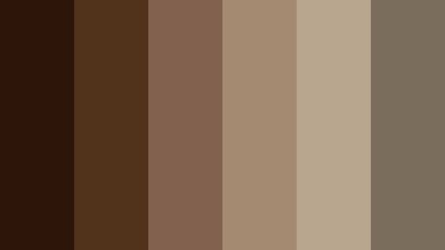
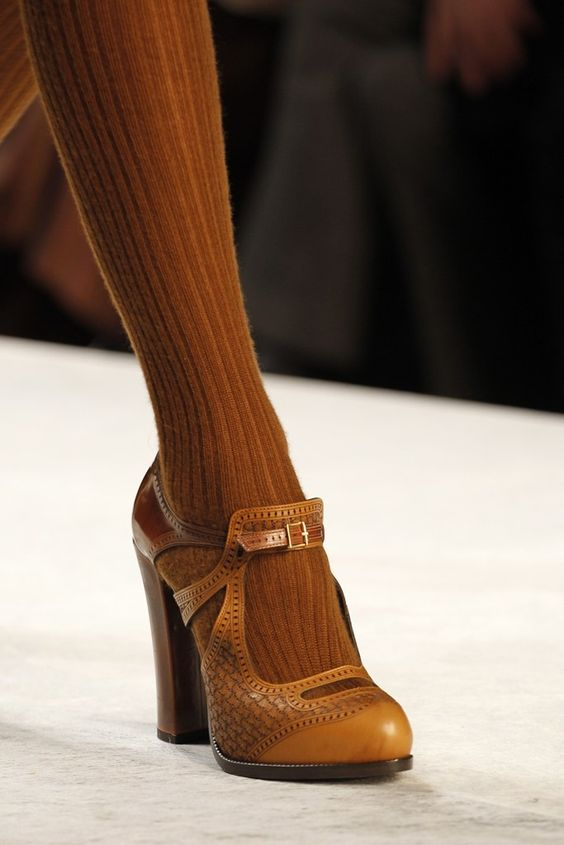

Colors

Fabrics

Accessories


Dark Academia is an aesthetic that revolves around literature,academics, mystery and arts. It is heavily inspired by European architecture, history, Greek Arts, Gothic and Dark elements. Although, the aesthetic sounds intense and dark to some but its harmless and creative. In fact, it’s based on a passion for learning. This growing subculture has taken the internet by storm and there are many online communities that revolve around dark academia.
A fan of dark academia aesthetic? Check out our Guide to Dark Academia Fashion. Everything you need to know to dress up in this dark moody aesthetic, all in one place. All Ideas and inspirations for Dark academia outfits.